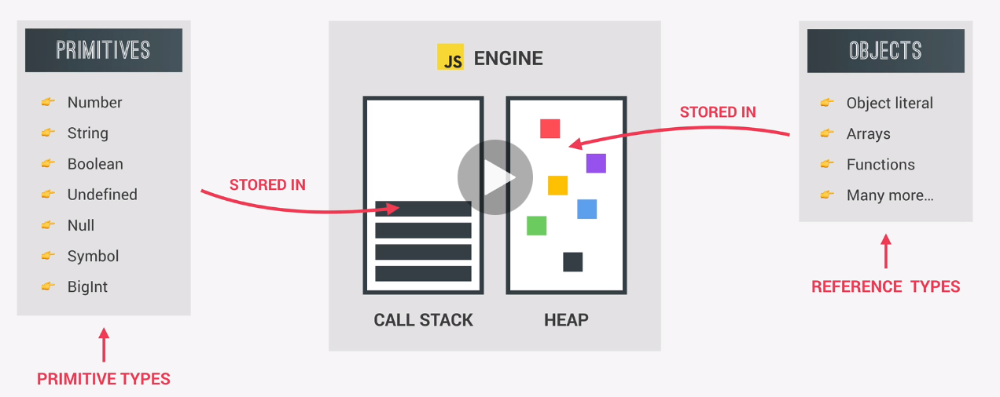

Primatives (called Primative Types) are data types that are NOT an Object and have no methods. They include:
These are stored in the Execution Context in which they were declared. FOr simplicity you could say they are stored in the Call Stack
They are immutable, meaning they cannot be changed.
Everything else are Objects and are called Reference Types.
These are stored in the HEAP since they could be too large to be stored in the Call Stack.
They are NOT immutable, meaning they CAN be changed.
This returns 30, then 31.
The original value of age is not altered since it appeared first in the code (and memory).
let age = 30
let oldAge = oldAge
age = 31
console.log(age)
console.log(oldAge)
Both Objects return 27 even though the first is set to 30.
When friend.age is changed, it also changes the original 'friend' Object in the HEAP.
This shows you can change the value of a constant as long as you're not changing the memory address in the HEAP.
NOTE: This means when you copy an Object, you're just creating a new variable that points to the Object.
const me = {
name: 'MyName',
age: 30
}
const friend = me
friend.age = 27
console.log('Friend: ', friend)
console.log('Me', me)